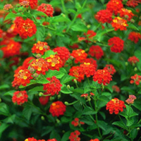
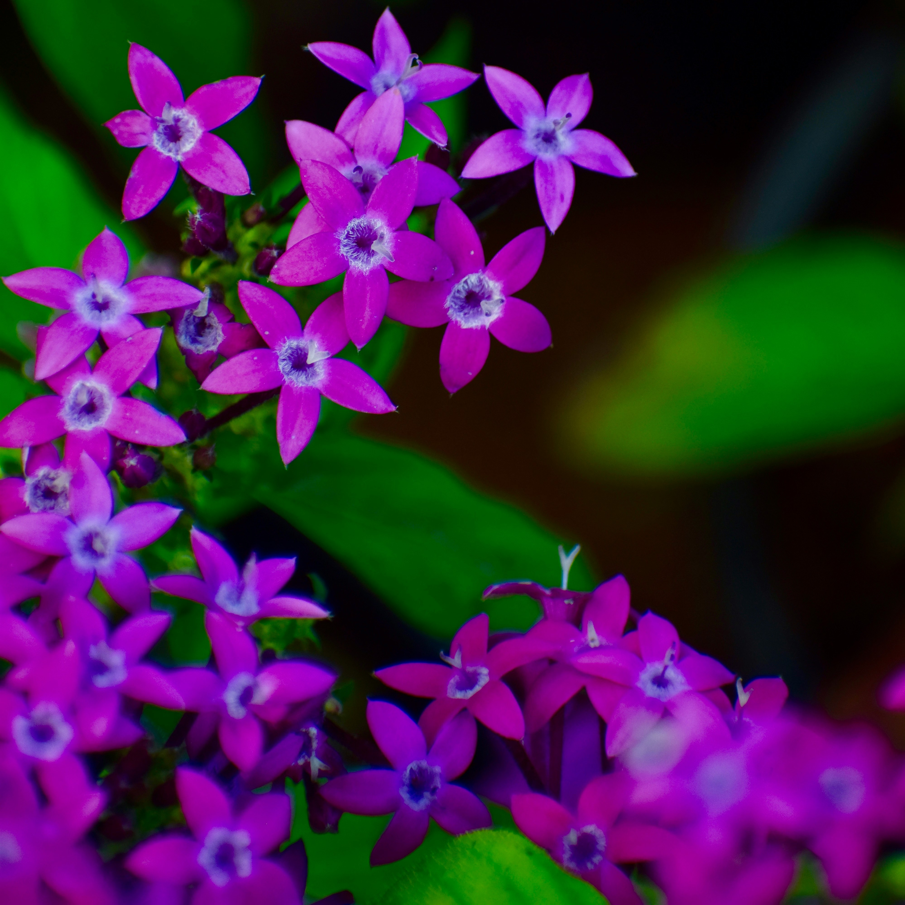

Lantana

Cora Vinca

Marigolds

Pentas

Zinnia

Annual Salvia

Hibiscus
Verbana

Esperanza

Purple Fountain Grass

Butterfly Weed

Gardening in Texas weather can be a bit intimidating. The unforgiving summers and the frequent weather changes that go with Texas weather can make gardening a bit of a challenge. However, there are several flowers and plants that can withstand and even thrive in such conditions. Click on the images below to learn more about these beautiful plants.

